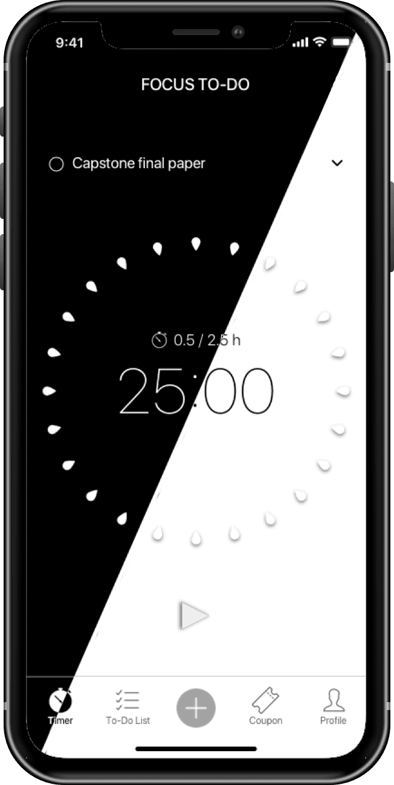
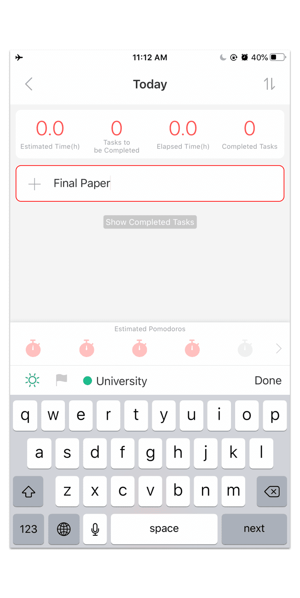
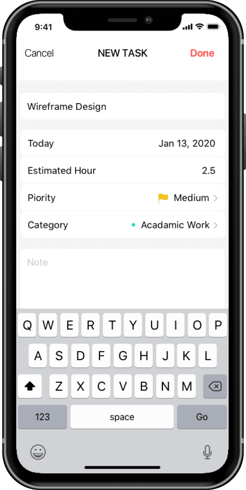
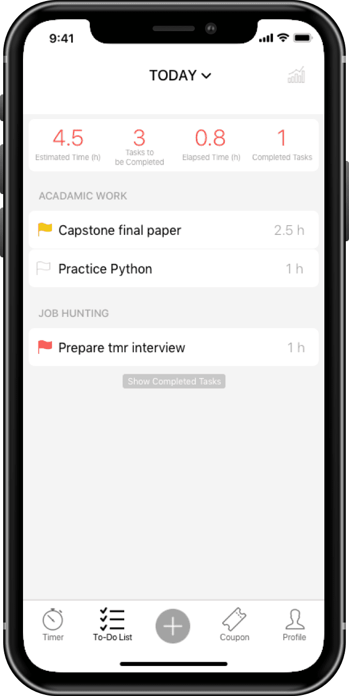
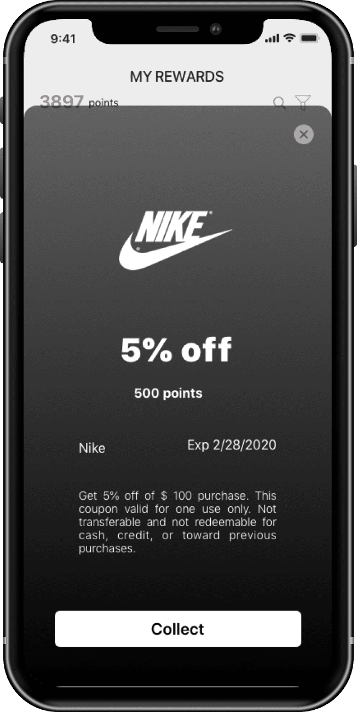
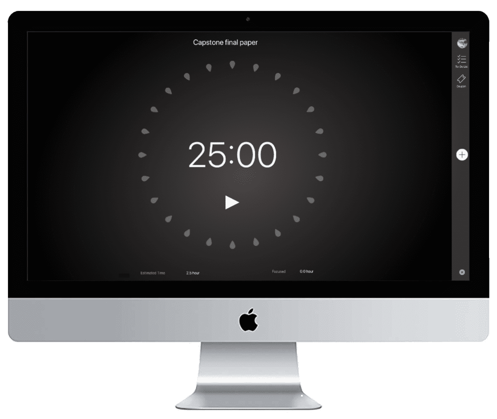

Focus To-Do is a time management app that combines To-Do list with the Pomodoro Technique - one of the most popular productivity strategies.
A story about why I chose this app to redesign...
As a second year master student, one of my challenges is to balance our time among submitting assignments, seeking jobs, and having fun. One day I was chatting with 5 of my friends about how to squeeze more time out and have a grad trip. We accidentally found out that 4 of us had used Focus To-Do before with the hope of having better time management. However, none of us achieved the goal by using this app.
TYPE
Individual project for usable design course
KEY SKILLS
End-to-End UX Design, User Research, Competitve Ａnalysis, Product Strategy
TIMELINE
3 month (Jan-Mar 2020)
TOOLS
Sketch, Pixlr
01. Overview
PROBLEM STATEMENT
What focus to-do can do to help people forming their time management habit?
As a mutitasker, I constantly try different productivity and applications to improve my time management skills. Yet, no matter how positive feedback others gave for an application, it is still hard for me to be used to a new habit.
How can I overcome this challenge and also help others in similar situation? I started to think of redesigning Focus To-Do, a fully funtional time managemnet app but cannot keep me using it.
SOLUTION
Turning virtual efforts into real-world sweets: using coupons as rewards to motivate users forming a habit.
I began the project by understanding the market and interviewing users for deeper insight. Defining the problems and researching relative documents to create a solution concept. With the concept in mind, I visualized the ideas and iterated the design, which led me to deliver the final solution.
02. Research
COMPETITIVE ANALYSIS
Looking into the market, trying to find inspiration and gaps among the existing products.
I used Appfollow, an application insight tool, to look into the app market and find competitive apps. Then chose 2 most similar apps that are in some way better than Focus To-Do to do the analysis.
A screenshot from Appfollow dashboard.
Focus To-Do
Pros:
- Have more competitive time management relative report
- Have To-do list
- Have laptop version
Cons:
- Task and timer need to be set in seperate page
- Unclear timer setting method
Be Focused
Pros:
- User can setup the task and timer in the main page
- Have to-do list
- Have laptop version
Cons:
- Too many advertisements
- Interface design is over simple
Focus Keeper
Pros:
- Clear timer setting method
Cons:
- Do not have to-do list
- Do not laptop version
What are the products in the market now?
Combining their pros, a good app should have
1) the to-do list and time management relative report
2) clear setting function for users to setup the timer and task
However, none of these apps provide a function to help users build up a time
management
habit.
"As a designer, I know that I shouldn't design for myself. I cannot assume that the problem is widespread enough that it's worth the effort to design something to solve it."
INTERVIEWS & PERSONAS
Thinking from the users, discovering their needs.
To quickly understand whether this is a problem worth solving, I tried to understand more about the challenges that arose while people use this kind of mobile application. I conducted quick, semi-structured interviews with 5 random people and came up with the persona.
What are users needs?
For new users, it is a challenge for them to build up the routine to use the time management app; while for people who already have time management habit, they hope the app is easy to use and can provide have time analysis report, allowing them to track and improve their skill better.
ONLINE REVIEWS & JOURNEY MAP
Back to the product, what is the gap between user goal and pain points?
With users needs in mind, I started to looked back into Focus To-Do. Looking the entire experience from user's standpoint, thinking of the problems it may have and also identifing some potential opportunities for the product.

I also read through online reviews on both Google Play and App Store to make sure that I have covered all the problems of this app.
What are the problems for Focus To-Do?
Problem 1: Unintuitive and confused user experience.
Inefficient ways of presentations make the majority of the information displayed on
the main page irrelevant to user needs.
The overused icons without any explanation also create obstacles to users. The
unintuitive design hurts users' experience, which in turn
leads users
to switch to other time management app.
Problem 2: The theme colors limit potential users.
Theme colors and the app style are also two of the main concerns for users
when deciding to use the app or not. The bright pink
color themes
for this app had reduced some users' willingness to use it.
Problem 3: Cannot help new users to build up the time management habit.
Lack of
consistency and
motivation are two of the most common problems that stop people from pursuing a
new
habit. As a human being, it is natural for us to revert to familiar structures.
Building
a new habit usually often takes extra effort, and people tend to avoid
effort.
03. Ideation
BRAINSTROMING
To turn problems into oppurtunities.
After understanding the problems, it is time to think about how to use design to turn problems into oppurtunities.
" How to make the design intuitive? "
INSIGHT 1: DESIGN FROM MENTAL MODEL
Lack of visual content and
unfriendly flow design create obstacles to users. To designed based on users'
mental model.
Simplfied the user flow and reorganized the information is the solution.
" What is the color that can be accepted by more users and also is a color that can help users to focus? "
INSIGHT 2: DESIGN FOR EVERYONE
After researching, the neutral tone is
my answer. With a high
acceptance, the
neutral
tone also provides a calming effect which is a plus to concentrate.
" What can an application do to help people build up a habit? "
INSIGHT 3: DESIGN FOR HABIT-FORMING
There is a 3R principle
(reminder,
routine, and reward) for building and maintaining
habits.
The app already had the first two R's, so my solution focused on “reward" to
attract and
motivate users to keep managing their time with this app. I created a new coupon
feature,
letting users earn real-world discounts by accumulating their focused time.
04. Prototype
SKETCH
Visualize the ideas.
Based on the insights I had come up with, I started to think about the oppurtunities that I
can turn the
ideas into reality and sketched them up quickly.
- Redefining the countdown timer on the main page.
- Recategorizing the information and reorganized the list page.
- Redesiging the adding function.
- Replacing bright pink colors to neutral colors
- Created a new coupon feature, so people can use the focusing time that they
accumulated to exchange to real world discounts.
PROTOTYPE
Think key elements into detail.
After defined and design the main function of each page, I began mapping the new user journey. Thinking about the user flow and also creating more details for each page.

USABILITY TEST
Test with users to make sure the design is following the mental model.
Followed Steve Krug’s template and KJ analysis as my usability testing, I hold the test and analyszed the resultin order to make the solution close to users mental model .
REPEAT
Iterate to have a better solution.
I iterated the design from time to time by acting on user feedbacks. The iterations covered from a page layout to a simple small piece.

05. Design
DESIGN GOAL 1
Simplify the user flow and use more neutral colors to raise the acceptance.
Reduce 3 clicks to 1 click
This design reduces users' cognitive load when they start a task timer. According to
previous
research, users feel lose when they what to create and start a task. Moving
the timer to the first page, users now can start a task
timer simplely and quickly.
Create dark/ bright mode
With the thought of using more neutral colors in mind, this design provides white and
black
background colors for users to choose.
Add a navigation bar
The navigation bar provides users a clear concept about what this app has and where the
function is. Users now can use the function they want directly.
Before
After
DESIGN GOAL 2
Intuitive the design and functions.
Use label to clerify unique icons.
In this version, I created a new page for creating task. Since this is one of the most
frequent functions that users are useing, the information and functions should express
clearly.
By putting information into list, users now know the meaning of each icon and the way to
adjust them.
Before
After
Reorganize the information
Replaced the date list into a drop-down calendar while combing it into the To-Do task
page.
This
simplify the user flow and also make the information easy for users to understand.
Before
After
DESIGN GOAL 3
Use coupon feature to help users form a habit.
Turn focused time into real-world discount
I create a new feature- coupon.
When
user focus 1 hour, app will
automatically turn into 1 point. And with more points users have, they can use the
points to
exchange copons and enjoy the sweets after hard working.

CROSS PLATFORM SOLUTION
Users can focus anytime everywhere.
